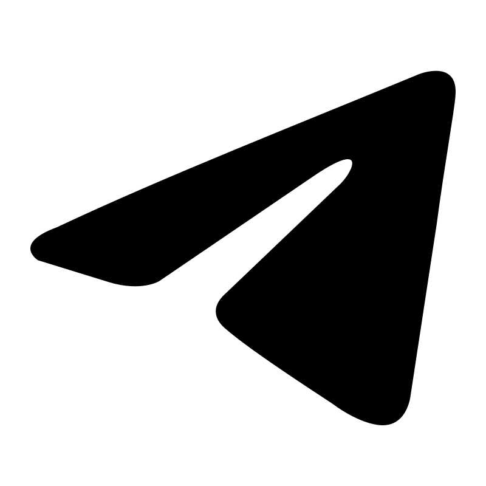

Капитализм штампует одинаковые, громкие и пустые формы. Настоящее влияние рождается в тишине — когда визуальный язык передаёт не тренд, а сущность
Присоединиться Стать частью проектаТехнологии влияния существуют, но в дизайне они часто остаются словами
Дизайнеры говорят о «смыслах», но на практике гонятся за трендами. Я создаю работающую методологию, которая превращает ценности в визуальные триггеры
Поддерживая этот проект, вы голосуете за дизайн, который умеет говорить по существу
Ваш вклад – это грант на то, чтобы «смыслы» перестали быть пустым звуком и стали точным инструментом настоящего дизайнера
Эти работы созданы по моей методологии. Каждая из них передаёт конкретное качество или ценность, превращая их в визуальный триггер.
Визуальный язык, который вызывает чувство стабильности и доверия. Используется в проектах, где важно подчеркнуть устойчивость и основательность.
Верховное самовыражение, изливание на холст своего уникального опыта. Своих триггеров. И преданное ожидание, когда же это откликнется в сердцах.
Просто перекладывание кирпичиков. Ранее подсмотренное, ранее задевшее за струны души. Упаковывание
старого в новую обëртку, пока мозг сам себе не признаëтся, что достижение нового было где-то увиденным и
извлечëнным из сложных нейронных путей.
Что же остаëтся за разоблачением романтического флëра? Зияющая пустота сломанных душ с палитрами
наперевес. Вновь и вновь ищущие ключи к тому, чтобы их Личность™ ценили ценой собственной – за факт
бытия таким вдохдовлëнным самим собой.
Я знаю, что безусловно я получу только обвинение за требование поддержки, которой я в жизни не видела.
Как ни крути, нет смысла впаривать окружающим своё «Я художник, я так вижу».
Я вижу не себя, я вижу людские души. Они как головоломка, вечно влекущая меня её решить. Раз от раза
творческое отчаяние спотыкается об инсайт, об знания. Человеческая душа не бог белых пятен. Она может
быть понята и осмысленна.
В творчестве я не стремлюсь к выражению себя лично. Я ищу людские души, чтобы выразить их. И это задача,
которая увлекает меня. Моя мотивация больше не может угаснуть, она влекома своей высшей целью. У меня
нет ни отчаяния, ни покоя.
Следить за моим развитием: 
Рассказать обо мне другим спонсорам: поделитесь ссылкой и напишите о том, что лично вас зацепило
Вложиться в растущий проект: